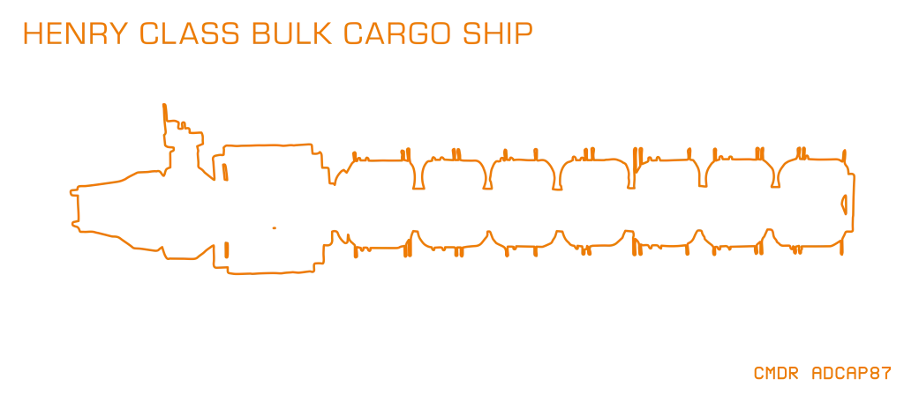

The Henry-class Hauler is a class of Bulk Cargo Ship.
The class consists of a long truss of tanks, flanked on either side by struts holding a large number of cargo containers; at the back of the ship is an engineering module, and a single-engine drive module with a conn tower on top.
In direction of travel there is a single Cargo-Bay at front.
Its default Cargo of around 250 tons is Consumer Items and Machinery.
The Ship Log Uplink and an Automated Defence Turret are generally mounted on the conn tower.
A Henry-class Hauler with call-sign WUL-563 can be found for reference at the following waypoints: Wulgaedia, HIP 94501, Haidjaram, HIP 93119, Suttonenses, Li Quang
- Number of Turrets: 1
- Cargo Bays: 1
- Total Cargo: ~250t
- Default Cargo: Consumer Items (Clothing, Consumer Technology, Domestic Appliances), Machinery (Building Fabricators, Energy Grid Assembly, Power Generators)
- Rare Commodity Sub-Type: Consumer Items

(Revision CMDR goemon, 21st of May 2022)
Known examples of this class are:
 Henry Class Bulk Cargo Ship ALC-339 - The Henry Class Bulk Cargo Ship designation ALC-339 is expected to be in the following system, based on the last reported flight operations plan: A number of Engineer Materials are scattered nearby, and a number of ships are in the area. A Ship Log Uplink point can be located on the hull. Deploy your ship’s...
Henry Class Bulk Cargo Ship ALC-339 - The Henry Class Bulk Cargo Ship designation ALC-339 is expected to be in the following system, based on the last reported flight operations plan: A number of Engineer Materials are scattered nearby, and a number of ships are in the area. A Ship Log Uplink point can be located on the hull. Deploy your ship’s... Henry Class Bulk Cargo Ship AR-005 - A Henry Class Bulk Cargo Ship designation AR-005 can be found at Pleiades Sector IR-W d1-55 4 a. It has been attacked, the damage looks to be from Thargoids. Many of the cargo units have become detached from the main ship. There is cargo around the ship. There is a Ship Log Uplink which reads:...
Henry Class Bulk Cargo Ship AR-005 - A Henry Class Bulk Cargo Ship designation AR-005 can be found at Pleiades Sector IR-W d1-55 4 a. It has been attacked, the damage looks to be from Thargoids. Many of the cargo units have become detached from the main ship. There is cargo around the ship. There is a Ship Log Uplink which reads:...